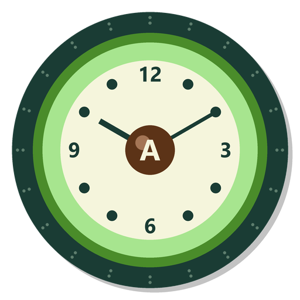

Nichts läuft ab.
Eine Android-App für die Mindesthaltbarkeits-Verwaltung deines Vorrats. Aktuell in der Beta-Phase.
Eine smarte App die deinen Lebensmittel-Vorrat im Blick behält. Du scannst Barcodes, die App merkt sich Mindesthaltbarkeit, Standort und schlägt dir Rezepte vor – aus dem was du bereits hast.
Tippe auf "Scannen", halte den Code unter die Kamera. Produktname, Bild und MHD werden automatisch erkannt.
7 Standorte (Kühlschrank, Tiefkühl, Vorrat, Keller …) mit Ampelfarben – sofort sehen was bald abläuft.
Plane deinen Einkauf, mit optionalen Preisen für die Budget-Übersicht.
Filter nach "was ich noch im Kühlschrank habe". Deutsche Hausmannskost, Italien, Asien, Osteuropa.
Geburtstage, Arzttermine, Wochenmarkt – alles auf einen Blick.
Alle Daten bleiben auf deinem Gerät. Keine Cloud, kein Account, kein Tracking.
Hinter Avoclock
Entwickler · Designer · Markeninhaber · Hardware · Software
„Avoclock ist von der ersten Code-Zeile bis zum fertigen Tablet komplett von mir gemacht – Software, Logo, Marke und Hardware-Bundle in einer Hand."
Avoclock ist aus einer ganz einfachen Frage entstanden: Warum vergesse ich immer wieder Lebensmittel im Kühlschrank, bis sie schlecht werden?
Aus der Frage wurde eine App. Aus der App ein größerer Plan: ein Tablet-Display für die Küche, das immer an ist und auf einen Blick zeigt was bald abläuft und welche Rezepte du daraus kochen kannst. Komplettes Eigenprojekt: Software, Marke (eingetragen beim DPMA), Logo, Verpackung, Hardware-Setup – alles aus einer Hand entwickelt.
Aktuell läuft Avoclock in der Beta-Phase. Bis das Komplett-Bundle fertig ist, kannst du dich gerne per E-Mail melden wenn du Fragen hast.